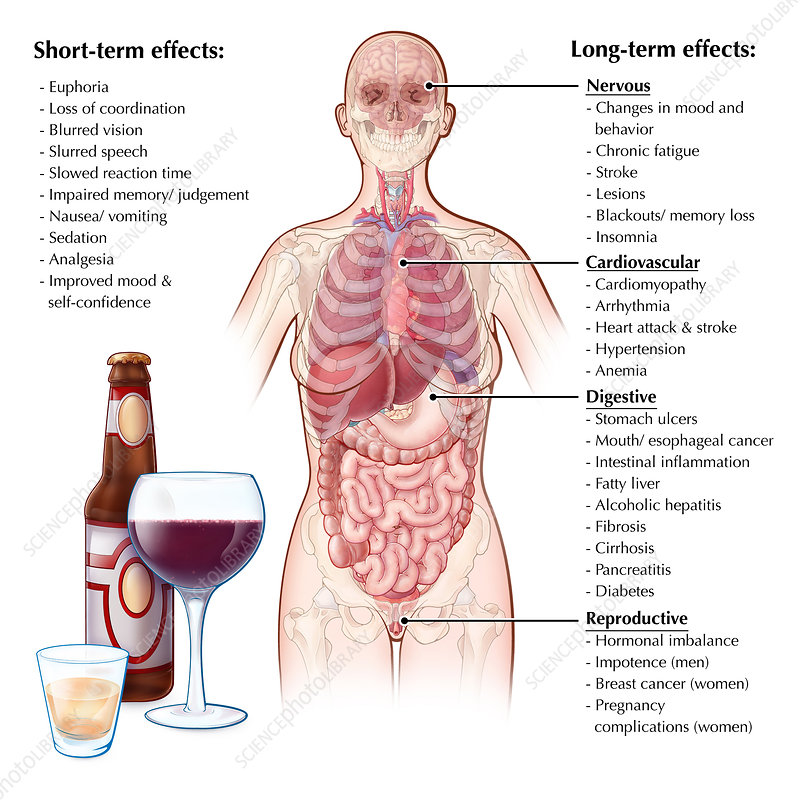

Alcohol can cause serious physical and psychological harm to a person, especially when consumed irresponsibly. There is a significant stigma surrounding addiction in general which makes people with a substance use disorder less likely to want to acknowledge the disorder and get help. The stigma is also why friends or loved ones don’t speak up about dangerous behaviors or changes they notice. However, even though people may try to hide it, alcoholism is hard to hide. Loved ones should look out for alcohol side effects, so they know when to step in and offer help.
Alcohol may cause visible effects after just one or two drinks. While alcohol symptoms like intoxication may seem like they make a party or concert more fun, excessive drinking can easily become dangerous. Excessive drinking is defined differently for men and women. A man under age 65 may have a drinking problem if he consumes four or more drinks in a day or more than 14 each week. In women and older men, heavy drinking is typically defined as more than three drinks in a day or seven total per week. When a person drinks at this level, it becomes easier to spot the typical signs and symptoms of alcoholism.
Alcoholism causes several symptoms, including physical and psychological symptoms which can be evident to others.
Alcohol has a lot of calories, so drinking excessively can lead to weight gain. The infamous “beer belly” is a common side effect of drinking too much, as well as a generally sloppy appearance, slurred speech and stumbling while walking. The more intoxicated a person is, the less likely they will be to care about their appearance or behavior.
As these changes manifest, a person living with alcohol addiction will likely experience conflicts with coworkers, friends or family. Legal troubles may include arrests for public drunkenness and driving while under the influence. Financing bail and lawyer’s fees can add up quickly and, compounded with the cost of purchasing alcohol, can further deepen financial problems.
Continual misuse of alcohol can lead to even more symptoms that may indicate alcoholism. Someone who regularly misuses alcohol may experience these social and physical symptoms:
Before alcoholism begins to tamper with a person’s body, it affects their mind. Addiction rewires the brain, making a person crave and seek out alcohol, even if they recently consumed it. This altered brain chemistry prioritizes alcohol and makes getting drunk a primary focus for someone living with alcohol addiction. Alcohol addiction can cause severe emotional turmoil if alcohol is craved but unavailable.
While alcohol can cause psychological issues, it can also have a strong effect on existing mental health disorders. Alcohol can lead to worsening of clinical mental health illnesses, especially depression. This aspect of alcoholism is complicated by the fact that the development of an addiction to alcohol is more likely for those with a mental illness.
As alcohol takes on an increasingly important role in a person’s life, they may be quick to let go of other activities or hobbies they once enjoyed. Someone who used to love spending their free time playing music or hanging out with friends may now be at a bar, instead.
Similar problems may appear at school or work. Alcohol can inhibit a person’s memory, motor skills and cognitive abilities, which can easily lead to tardiness and low performance on academic or work assignments. Most people experience attitude changes while they’re drunk, as well as becoming more boisterous, silly or argumentative. This attitude shift may cause a problem in an educational or professional setting.
The impaired abilities and decreased inhibition that alcohol causes can also lead to unintended consequences. Injury from risky activities, legal problems from inappropriate public conduct or increased risk of sexually transmitted infections all increase with alcohol use.
Heavy drinking can easily lead to an alcohol overdose, also known as alcohol poisoning. Poisoning typically occurs at a BAC of .45 or higher.
Unfortunately, deaths from alcohol poisoning are common in heavy drinkers, so it’s important you look for these overdose symptoms in yourself or a loved one:
An alcohol overdose is a medical emergency and must be treated before it becomes fatal. If you think someone may be experiencing alcohol poisoning or an overdose, call +2348070760780 immediately.
Over time, excessive alcohol consumption can cause serious bodily injury and psychological issues like alcohol psychosis. In particular, alcohol side effect long term can affect the human liver, heart, and brain.
Alcohol and Liver Damage:The liver is the organ that metabolizes alcohol. Once a person consumes alcohol, the liver begins working to process it. By converting ethanol to the toxin acetaldehyde, it breaks down into acetate and further breaks down into water and carbon dioxide. The liver can process about ten grams of ethanol per hour, leaving the remaining amount in the bloodstream. Long-term, heavy drinking can damage the liver and cause liver disease. Regular, heavy drinking in men is defined as 20 or more drinks per week for 10 or more years. In women, regular, heavy drinking is defined as 16 or more drinks per week for 10 or more years. The more alcohol the liver has to process, the more bloated its cells become. The resulting swelling and inflammation are known as alcoholic hepatitis or alcoholic steatohepatitis. As heavy drinking continues, these conditions can cause fibrosis (scarring) to develop. These liver diseases can eventually lead to liver failure and possible death. Not only do these conditions cause severe consequences, but a poorly functioning liver also affects the rest of the body. Specifically, liver dysfunction from alcohol consumption can cause a brain disorder called hepatic encephalopathy. The disorder causes changes in basic behavior, like sleep patterns and mood, but it also has more serious effects, such as personality changes, confusion, anxiety, depression, and problems with physical coordination. The more serious cases can be fatal.
Alcohol and Brain Damage: Alcohol’s direct effect on the brain can be extreme. In the short term, alcohol can slow functioning and make the person misusing alcohol feel as though the world is moving slower. Long-term abuse can cause even more damage. For example, studies of men and women with alcoholism have shown greater brain shrinkage (an indicator of brain damage) than their counterparts. Additionally, alcoholism often leads to a deficiency in thiamine and Vitamin B1. This deficiency causes neurological conditions known as Wernicke’s encephalopathy and Korsakoff’s psychosis. Together, they’re referred to as Wernicke-Korsakoff Syndrome. This syndrome causes a short but severe state of mental confusion and muscle incoordination, as well as trouble learning and remembering new information.
Alcohol and Heart Damage: Excessive alcohol consumption can damage the heart in multiple ways. The damages include increasing your risk of high blood pressure, heart disease, atrial fibrillation, and hemorrhagic stroke. It can also raise triglyceride levels and can lead to obesity, which puts significant strain on the heart. While it is true that drinking in moderation can promote heart health, excessive drinking can weaken the heart itself — a condition called cardiomyopathy — and cause premature death.